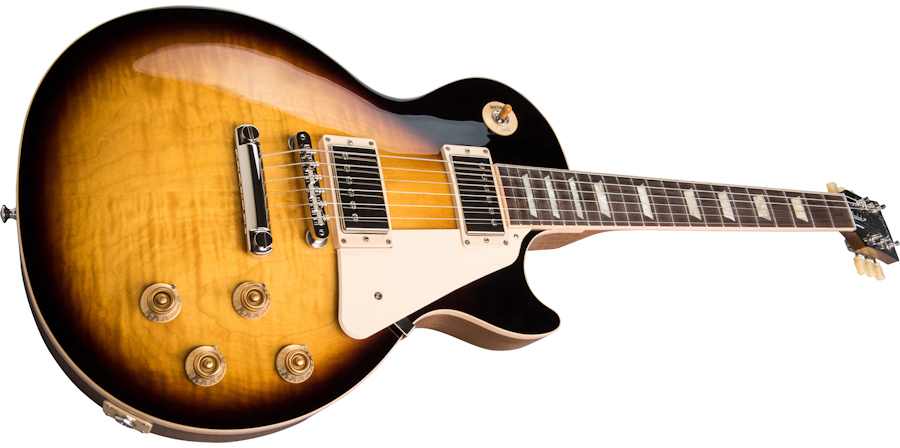

Deze website gaat over de Gibson Les Paul.
De Gibson Les Paul is een van de bekendste solid-body-gitaarmodellen van de Amerikaanse fabrikant Gibson. De productie begon vroeg in de jaren 50 in de Gibson-fabriek in Kalamazoo. Tot op de dag van vandaag is de gitaar nog steeds zeer geliefd bij gitaristen over de hele wereld.
De Gibson Les Paul heeft:
De meer informatie over de Gibson Les Paul kunt u vinden op de Gibson website